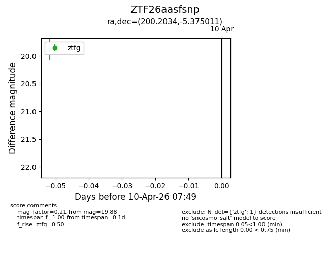
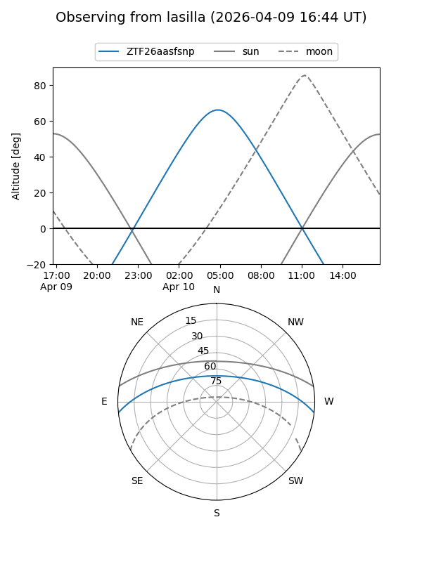
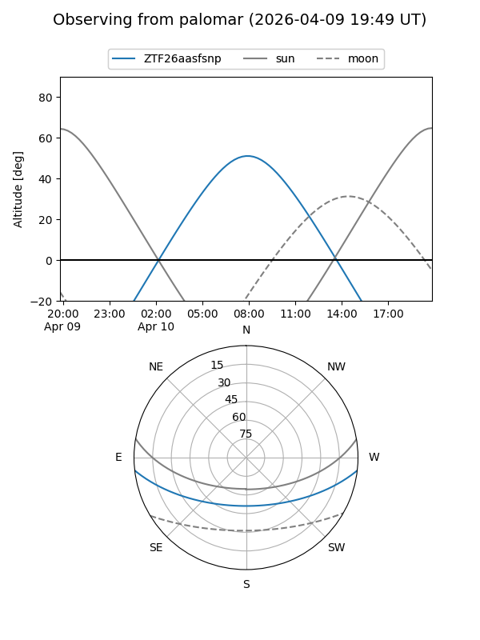

ZTF26aasfsnp
Target ZTF26aasfsnp at 2026-04-10 07:57
Aliases and brokers:
FINK: link
Lasair: link
ALeRCE: link
alt names
ZTF26aasfsnp (ztf,fink_ztf)
Coordinates:
equatorial (ra, dec) = 200.2034,-5.37501
equatorial (HMS+DMS) = 13:20:48.83,-05:22:30.04
galactic (l, b) = (316.3458,+56.72972)
Flags:
Photometry:
last ztfg=19.88
1 ztfg detections
Lightcurve

Visibility


Additional plots